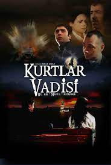
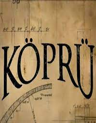
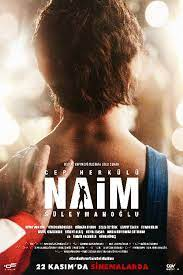
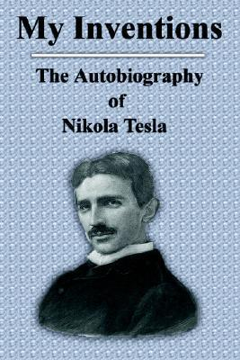
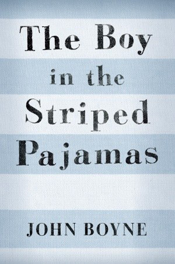

Ertuğrul Düğencioğlu
Hakkımda
Merhaba ben Ertuğrul Düğencioğlu. Tuzla/İstanbul'da yaşıyorum Tuzla Mesleki ve Teknik Anadolu Lisesinde endüstriyel otomasyon alanı mekatronik dalı öğrencisiyim.Yazılım geliştirme ile ilgileniyorum. Daha önceden Python yazılım dili ile ilgilenmiştim ve bir kaç proje geliştirmiştim şu anda ise daha önceden ufak bir temel olarak aldığım HTML ve CSS'i tam olarak öğrenmeyi aynı zamanda JavaScript'i de tam olarak öğrenmeyi hedefliyorum.
Sevdiğim Diziler
Kurtlar Vadisi (imdb)

Kurtlar Vadisi, Osman Sınav tarafından 15 Ocak 2003 tarihinde Show TV'de "Bu bir mafya dizisidir" sloganıyla yayımlanmaya başlayan aksiyon, dram, istihbarat ve politik türündeki Türk televizyon dizisidir. 4 sezondan ve 97 bölümden oluşmaktadır.

Köprü, yazar Ayşe Kulin tarafından kaleme alınan Köprü adlı romandan esinlenilerek çekilen ve 2006-2008 yılları arasında Star TV'de yayımlanan dram, macera ve politik türdeki Türk televizyon dizisidir. 2 sezondan ve 65 bölümden oluşmaktadır
Sevdiğim Filmler
The Wolf of Wall Street (imdb)

2013 ABD yapımı kara komedi filmidir. Yönetmenliğini Martin Scorsese üstlenmiştir, senaryosu Jordan Belfort'un aynı isimli otobiyografik romanından Terence Winter tarafından uyarlanmıştır. Filmin başrolünde hırslı borsacı Jordan Belfort rolünde Leonardo DiCaprio yer almaktadır.
Cep Herkülü: Naim Süleymanoğlu (imdb)

Cep Herkülü: Naim Süleymanoğlu, yönetmenliğini Özer Feyzioğlu'nun yaptığı, senaryosunu Barış Pirhasan'ın yazdığı, yapımcılığını Mustafa Uslu'nun yaptığı biyografi ve dram türündeki Türk sinema filmi.
Sevdiğim Kitaplar
İcatlarım ve Hayatım (goodreads)

Elektronik çağına öncülük eden çalışmalarıyla ve Thomas Edison’la olan rekabetiyle tanınan Nikola Tesla'nın otobiyografisi.
Çizgi Pijamalı Çocuk (goodreads)

Çizgili Pijamalı Çocuk, İrlandalı yazar John Boyne'un 2006 yılında yazdığı bir Holokost romanıdır. Hitler zamanında bir subay çocuğu ve yahudi çoçuğu arasında geçen olaylardır.